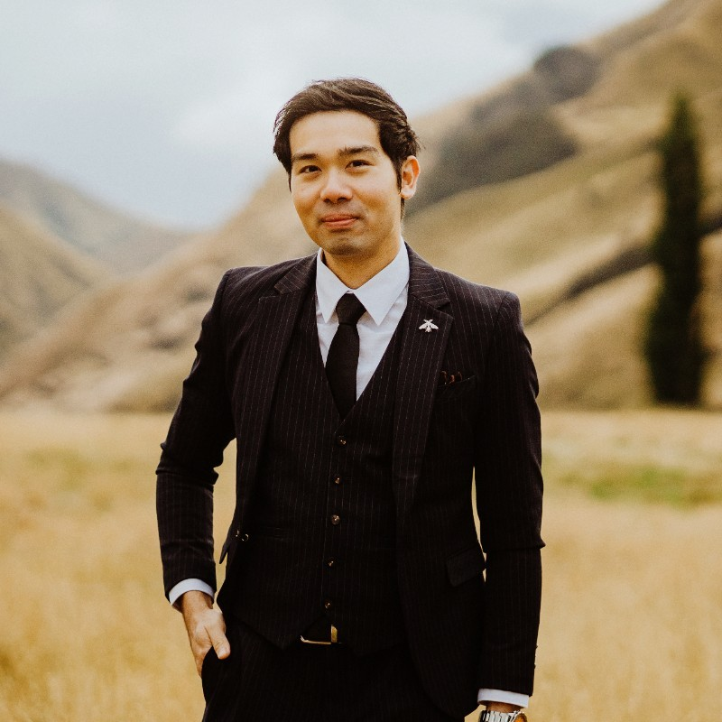
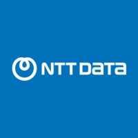

Reuben Chan
Education |
Certificates |
Skills |
Honors & Languages
About me
Results-driven DevOps Engineer with over three years of experience in automating processes and managing AI Ops and infrastructure within hybrid IT environments. Proficient in utilizing automation tools and various APIs to streamline operations and enhance system performance. Proven track record of delivering innovative solutions for AI Ops and infrastructure automation, contributing to improved service continuity and operational excellence. Experienced in both technical and training roles, mentoring junior associates and managing complex projects.
Experience

Senior Associate DevOps Engineer
Full-time | Jun 2023 - Dec 2024 (1 yr 7 mos)
Singapore · Hybrid
- Mentored interns and junior DevOps associates, fostering professional growth.
- Delivered PoCs for AI Ops including IT Health Check, Root Cause Analysis, and Infrastructure Automation.
- Developed Kubernetes automation using Intel QuickAssist Technology on Xeon processors to enhance performance.
- Presented AI Ops and Cloud Security use cases at Goware Expo 2023 & 2024.
- Handled Cisco compliance using Yang Model with Ansible orchestration.
Student Intern SGUP-CT Cloud Support and DevOps
Full-time | Mar 2021 - Jan 2022 (11 mos)
Singapore
- Completed a comprehensive 3-month bootcamp followed by a 6-month apprenticeship, gaining hands-on experience in cloud support and DevOps.
- Acquired technical proficiency in Python, Git, Linux, Ansible, Docker, Terraform, Azure, C#, Jenkins, and Agile methodologies through project-based learning.
- Developed strong behavioral and mindset skills crucial for effective cloud support and DevOps performance, emphasizing teamwork, problem-solving, and continuous learning.
Flight Attendant
Full-time | Aug 2012 - Feb 2021 (8 yrs 7 mos)
Singapore
- Brand ambassador for Singapore Airlines, delivering high service standards, grooming, first aid, and medical support.
- Awarded certificate of performance for outstanding A1 service in FY 19/20.
- Received honorary title ‘Service over and above the rest’ for Q4 (Oct–Dec 19/20) excellence.
Management Trainee Program
Full-time | Sep 2010 - Jul 2012 (1 yr 11 mos)
Federal Territory of Kuala Lumpur, Malaysia
- Handled recruitment, interviews, compliance, training, and team-building in the Human Resource Department.
- Compiled and presented financial reports, budgets, commentaries, and statements in the Finance Department.